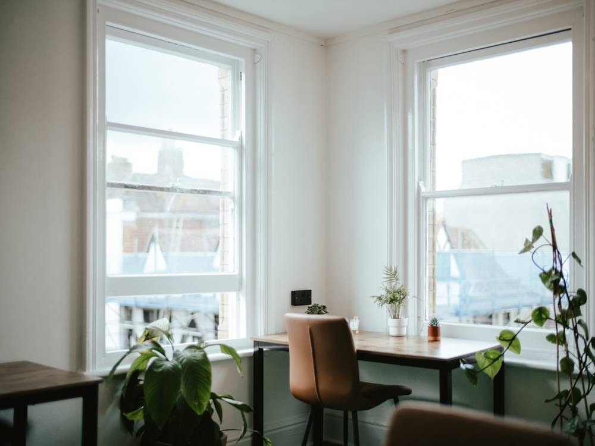

Prima visita medica nutrizionale
[TARIFFA PRIMA VISITA]
Cosa include
- Anamnesi medica e alimentare: storia clinica, terapie in corso, familiarità, abitudini, gusti, orari, cosa ti riesce facile e cosa no.
- Esame obiettivo e misure: peso, altezza, circonferenze e, in studio, bioimpedenziometria [SE DISPONIBILE].
- Lettura degli esami che porti e valutazione del quadro metabolico.
- Eventuale prescrizione di esami di approfondimento o di terapie, se la visita lo indica.
- Definizione condivisa del percorso e piano personalizzato consegnato entro [GIORNI] giorni, con indicazioni pratiche per la spesa e i pasti fuori casa.
In studio o online

A Milano, in [INDIRIZZO STUDIO]
- Esame obiettivo e misure prese direttamente in studio.
- Bioimpedenziometria [SE DISPONIBILE].
- Porti esami e diario alimentare in cartaceo o sul telefono.
- Prescrizioni consegnate a mano.
- Saldo in studio al termine.
- Abbigliamento comodo.

Da casa tua, su Google Meet
- Misure guidate: ti spiego come prenderle prima della visita.
- Analisi della composizione corporea non disponibile.
- Carichi esami e diario alimentare prima della visita.
- Prescrizioni inviate via email in formato digitale.
- Saldo con bonifico dopo la visita.
- Connessione stabile e un posto tranquillo.